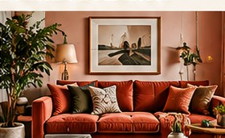

Living Room
How to Add Colour with Confidence
Give a neutral room character with terracotta, textiles and layered accents.
Read styling tips →
Start with one strong colour in a cushion, artwork or throw. Repeat it in two smaller details and balance it with natural wood or cream.